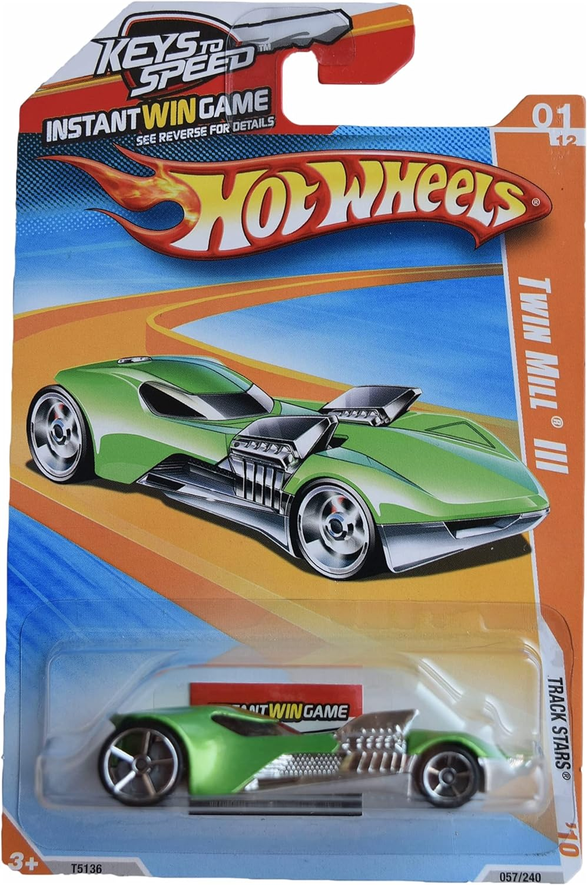
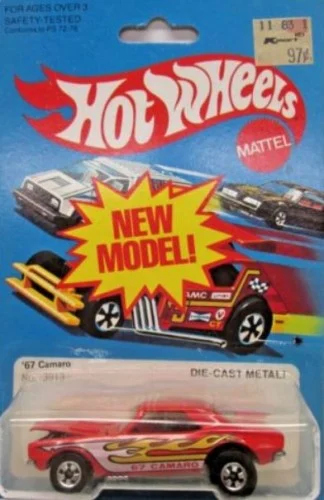
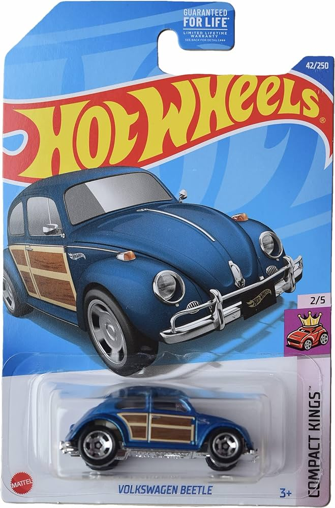

32 Ford
Este automóvil es una representación del Ford Model B de 1932, un automóvil que es considerado uno de los más influyentes en la historia del automóvil estadounidense, especialmente en la cultura hot rod y custom car.

Twin mill
Es conocido por su diseño futurista y su distintiva carrocería de dos motores sobresalientes. Su apariencia única lo ha convertido en un favorito de los coleccionistas y entusiastas de Hot Wheels durante décadas.
67 camaro
es apreciado por su diseño clásico y su inclusión en la serie Real Riders, que representó un paso adelante en términos de realismo y calidad de construcción para Hot Wheels en ese momento. Su combinación de nostalgia, diseño atractivo y la distinción de ser parte de una serie especial lo convierte en una pieza muy buscada por los coleccionistas de Hot Wheels.
67 Volkswagen Beetle
ha sido lanzado en varias variantes a lo largo de los años, incluyendo versiones estándar, personalizadas, y de edición especial. Además, este modelo ha sido presentado en diversas series y colecciones de Hot Wheels, lo que ha contribuido a su popularidad entre los fans de todas las edades.
